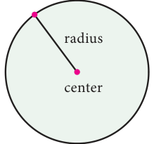
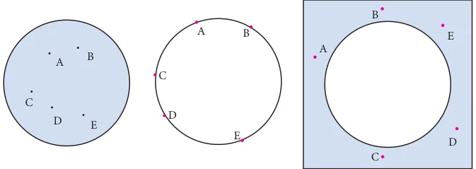
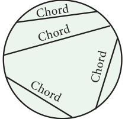
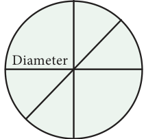
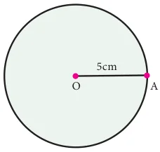
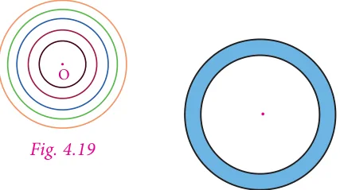
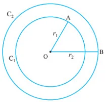

In previous term we have learnt to find the area and the circumference of a circle. Now we can learn more about circles.
4.3.1 circles
The collection of all the points in a plane, which are at a fixed distance from a fixed point in the plane, is called a circle.
The fixed point is called the centre of the circle and the fixed distance is called the radius of the circle. The word radius is used in two senses – in the sense of a line segment which joins the centre of the circle and a point on the circle and in the sense of length of the line segment.
A circle groups all points in the plane on which it lies into three categories. They are: (i) the points which are inside the circle, which is also called the interior of the circle; (ii) the points on the circle and (iii) the points outside the circle, which is also called the exterior of the circle.


If two points on a circle are joined by a line segment, then the line segment is called a chord of the circle. Since there are many points on the circles, any number of chords can be drawn in a circle.
The chord, which passes through the centre of the circle, is called a diameter of the circle.

As in the case of radius, the word 'diameter' is also used in two senses, that is, as a line segment and also as its length.
It can be easily verified that the diameter is the longest chord and all diameters have the same length. The diameter is equal to two times the radius.
4.3.2 Construction of circles
Now let us learn to construct circle with given radius and diameter.

Example Construct a circle of radius \(5\ \text{cm}\) with centre O.
Step 1: Mark a point O on the paper.
Step 2: Extend the compass distance equal to the radius \(5\ \text{cm}\)
Step 3: At center O, Hold the compass firmly and place the pointed end of the compass.
Step 4: Slowly rotate the compass around to get the circle.
4.3.3 The Concentric Circles

Circles drawn in a plane with a common centre and different radii are called concentric circles (Fig. 4.19).
The area between the two concentric circles is known as circular ring (Fig. 4.20).

Width of the circular ring (see Fig. 4.21)
\(= OB - OA = r_2 - r_1\).
4.3.2 Construction of Concentric Circles
Example Draw concentric circles with radii \(4\ \text{cm}\) and \(6\ \text{cm}\) and shade the circular ring. Find its width.
Step 1: Draw a rough diagram and mark the given measurements.
Step 2: Take any point O and mark it as the centre.
Step 3: With O as centre and draw a circle of radius \(OA = 4\ \text{cm}\)
Step 4: With O as centre and draw a circle of radius \(OB = 6\ \text{cm}\).
Thus the concentric circles \(C_1\) and \(C_2\) are drawn.
Width of the circular ring \(= OB - OA = 6 - 4 = 2\ \text{cm}\).